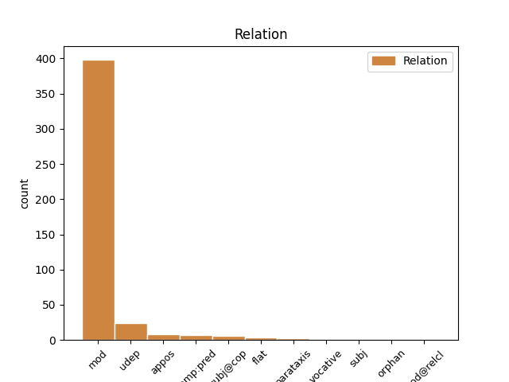

Distribution of features within this leaf


Agreement Rules sorted by frequency.
- When the dependent token is the modifer(mod) of the head token, and the head token is NOUN and the dependent token is PRON.
1 Siin _ _ _ _ 0 _ _ _
2 ei _ _ _ _ 0 _ _ _
3 ole _ _ _ _ 0 _ _ _
4 loogikaga _ _ _ _ 0 _ _ _
5 midagi miski PRON P Case=Par|Number=Sing|PronType=Ind 6 mod _ _
6 pistmist pistmine NOUN S Case=Par|Number=Sing 0 _ _ _
7 . _ _ _ _ 0 _ _ _
1 Gorilla gorilla PROPN S Case=Nom|Number=Sing 2 mod _ _
2 klaas klaas NOUN S Case=Nom|Number=Sing 0 _ _ _
3 pn _ _ _ _ 0 _ _ _
4 eesti _ _ _ _ 0 _ _ _
5 keeles _ _ _ _ 0 _ _ _
6 katastatud _ _ _ _ 0 _ _ _
7 klaas _ _ _ _ 0 _ _ _
8 . _ _ _ _ 0 _ _ _
1 ja _ _ _ _ 0 _ _ _
2 kui _ _ _ _ 0 _ _ _
3 saab _ _ _ _ 0 _ _ _
4 tugeva _ _ _ _ 0 _ _ _
5 löögi _ _ _ _ 0 _ _ _
6 nurka _ _ _ _ 0 _ _ _
7 siis _ _ _ _ 0 _ _ _
8 on _ _ _ _ 0 _ _ _
9 ekraan _ _ _ _ 0 _ _ _
10 totaalselt _ _ _ _ 0 _ _ _
11 puru _ _ _ _ 0 _ _ _
12 , _ _ _ _ 0 _ _ _
13 samas _ _ _ _ 0 _ _ _
14 kui _ _ _ _ 0 _ _ _
15 tavalisel _ _ _ _ 0 _ _ _
16 klaasile _ _ _ _ 0 _ _ _
17 võib _ _ _ _ 0 _ _ _
18 teha _ _ _ _ 0 _ _ _
19 vaid _ _ _ _ 0 _ _ _
20 ühe üks NUM N Case=Gen|Number=Sing|NumType=Card 22 mod _ _
21 pooliku _ _ _ _ 0 _ _ _
22 prao pragu NOUN S Case=Gen|Number=Sing 0 _ _ _
23 , _ _ _ _ 0 _ _ _
24 kui _ _ _ _ 0 _ _ _
25 sedagi _ _ _ _ 0 _ _ _
26 . _ _ _ _ 0 _ _ _
1 Leontine _ _ _ _ 0 _ _ _
2 siis _ _ _ _ 0 _ _ _
3 me mina PRON P Case=Nom|Number=Plur|Person=1|PronType=Prs 5 subj@cop _ _
4 suht _ _ _ _ 0 _ _ _
5 sarnased sarnane ADJ A Case=Nom|Degree=Pos|Number=Plur 0 _ _ _
6 ..... _ _ _ _ 0 _ _ _
7 ma _ _ _ _ 0 _ _ _
8 ka _ _ _ _ 0 _ _ _
9 võtan _ _ _ _ 0 _ _ _
10 kaalust _ _ _ _ 0 _ _ _
11 juurde _ _ _ _ 0 _ _ _
12 isegi _ _ _ _ 0 _ _ _
13 siis _ _ _ _ 0 _ _ _
14 kui _ _ _ _ 0 _ _ _
15 ainult _ _ _ _ 0 _ _ _
16 mõtlen _ _ _ _ 0 _ _ _
17 näiteks _ _ _ _ 0 _ _ _
18 koogi _ _ _ _ 0 _ _ _
19 peale _ _ _ _ 0 _ _ _
1 Olen _ _ _ _ 0 _ _ _
2 ka _ _ _ _ 0 _ _ _
3 oma _ _ _ _ 0 _ _ _
4 lähedastega _ _ _ _ 0 _ _ _
5 sellest _ _ _ _ 0 _ _ _
6 rääkinud _ _ _ _ 0 _ _ _
7 , _ _ _ _ 0 _ _ _
8 ise _ _ _ _ 0 _ _ _
9 oleksin _ _ _ _ 0 _ _ _
10 rahul _ _ _ _ 0 _ _ _
11 kui _ _ _ _ 0 _ _ _
12 tuhastatakse _ _ _ _ 0 _ _ _
13 , _ _ _ _ 0 _ _ _
14 ja _ _ _ _ 0 _ _ _
15 laul laul NOUN S Case=Nom|Number=Sing 0 _ _ _
16 mida _ _ _ _ 0 _ _ _
17 võiks _ _ _ _ 0 _ _ _
18 sel _ _ _ _ 0 _ _ _
19 hetkel _ _ _ _ 0 _ _ _
20 lasta _ _ _ _ 0 _ _ _
21 vms _ _ _ _ 0 _ _ _
22 Eric Eric PROPN S Case=Nom|Number=Sing 15 appos _ _
23 Clapton _ _ _ _ 0 _ _ _
24 : _ _ _ _ 0 _ _ _
25 Tears _ _ _ _ 0 _ _ _
26 in _ _ _ _ 0 _ _ _
27 heaven _ _ _ _ 0 _ _ _
28 :) _ _ _ _ 0 _ _ _
1 Ilma _ _ _ _ 0 _ _ _
2 mingit _ _ _ _ 0 _ _ _
3 halastustunnet _ _ _ _ 0 _ _ _
4 tundmata _ _ _ _ 0 _ _ _
5 saatis _ _ _ _ 0 _ _ _
6 ta _ _ _ _ 0 _ _ _
7 Enrique _ _ _ _ 0 _ _ _
8 Iglesiase _ _ _ _ 0 _ _ _
9 lood _ _ _ _ 0 _ _ _
10 oma _ _ _ _ 0 _ _ _
11 listist _ _ _ _ 0 _ _ _
12 minema _ _ _ _ 0 _ _ _
13 , _ _ _ _ 0 _ _ _
14 tagasi _ _ _ _ 0 _ _ _
15 My My X S Case=Nom|Number=Sing 0 _ _ _
16 music Music PROPN S Case=Nom|Number=Sing 15 flat _ _
17 folderisse _ _ _ _ 0 _ _ _
18 , _ _ _ _ 0 _ _ _
19 kus _ _ _ _ 0 _ _ _
20 Rammstein _ _ _ _ 0 _ _ _
21 neid _ _ _ _ 0 _ _ _
22 juba _ _ _ _ 0 _ _ _
23 ootas _ _ _ _ 0 _ _ _
24 . _ _ _ _ 0 _ _ _
1 Tasuline _ _ _ _ 0 _ _ _
2 parkimine _ _ _ _ 0 _ _ _
3 on _ _ _ _ 0 _ _ _
4 tööpäevadel _ _ _ _ 0 _ _ _
5 kuni _ _ _ _ 0 _ _ _
6 kell kell NOUN S Case=Nom|Number=Sing 0 _ _ _
7 16.00 16.00 NUM N Case=Nom|Number=Sing|NumForm=Digit|NumType=Card 6 appos _ _
8 ( _ _ _ _ 0 _ _ _
9 märgistatult _ _ _ _ 0 _ _ _
10 2 _ _ _ _ 0 _ _ _
11 tundi _ _ _ _ 0 _ _ _
12 tasuta _ _ _ _ 0 _ _ _
13 ) _ _ _ _ 0 _ _ _
14 . _ _ _ _ 0 _ _ _
1 .. _ _ _ _ 0 _ _ _
2 see _ _ _ _ 0 _ _ _
3 nn. _ _ _ _ 0 _ _ _
4 maala _ _ _ _ 0 _ _ _
5 on _ _ _ _ 0 _ _ _
6 aastaid _ _ _ _ 0 _ _ _
7 " _ _ _ _ 0 _ _ _
8 Ilus _ _ _ _ 0 _ _ _
9 vaatepilt _ _ _ _ 0 _ _ _
10 " _ _ _ _ 0 _ _ _
11 Papiniidus _ _ _ _ 0 _ _ _
12 prügimäena _ _ _ _ 0 _ _ _
13 . _ _ _ _ 0 _ _ _
14 Mis _ _ _ _ 0 _ _ _
15 on _ _ _ _ 0 _ _ _
16 sellest _ _ _ _ 0 _ _ _
17 Pärnu _ _ _ _ 0 _ _ _
18 LV`sel _ _ _ _ 0 _ _ _
19 . _ _ _ _ 0 _ _ _
20 tähtis tähtis ADJ A Case=Nom|Degree=Pos|Number=Sing 0 _ _ _
21 , _ _ _ _ 0 _ _ _
22 et _ _ _ _ 0 _ _ _
23 LV`se _ _ _ _ 0 _ _ _
24 ja _ _ _ _ 0 _ _ _
25 kesklinna _ _ _ _ 0 _ _ _
26 puhas _ _ _ _ 0 _ _ _
27 oleks _ _ _ _ 0 _ _ _
28 . _ _ _ _ 0 _ _ _
29 Kes kes PRON P Case=Nom|Number=Sing|PronType=Int,Rel 20 mod _ _
30 sinna _ _ _ _ 0 _ _ _
31 prügi _ _ _ _ 0 _ _ _
32 poetavad _ _ _ _ 0 _ _ _
33 , _ _ _ _ 0 _ _ _
34 eks _ _ _ _ 0 _ _ _
35 ikka _ _ _ _ 0 _ _ _
36 tänapäeva _ _ _ _ 0 _ _ _
37 uue _ _ _ _ 0 _ _ _
38 maja _ _ _ _ 0 _ _ _
39 om´anikud _ _ _ _ 0 _ _ _
40 , _ _ _ _ 0 _ _ _
41 sest _ _ _ _ 0 _ _ _
42 maja _ _ _ _ 0 _ _ _
43 suudetakse _ _ _ _ 0 _ _ _
44 ehitada _ _ _ _ 0 _ _ _
45 , _ _ _ _ 0 _ _ _
46 kallis _ _ _ _ 0 _ _ _
47 auto _ _ _ _ 0 _ _ _
48 osta _ _ _ _ 0 _ _ _
49 , _ _ _ _ 0 _ _ _
50 aga _ _ _ _ 0 _ _ _
51 prügiveo _ _ _ _ 0 _ _ _
52 eest _ _ _ _ 0 _ _ _
53 enam _ _ _ _ 0 _ _ _
54 raha _ _ _ _ 0 _ _ _
55 ei _ _ _ _ 0 _ _ _
56 jätku _ _ _ _ 0 _ _ _
57 . _ _ _ _ 0 _ _ _
58 Prügi _ _ _ _ 0 _ _ _
59 veetakse _ _ _ _ 0 _ _ _
60 pidevalt _ _ _ _ 0 _ _ _
61 autodega _ _ _ _ 0 _ _ _
62 korrusnajade _ _ _ _ 0 _ _ _
63 konteineritesse _ _ _ _ 0 _ _ _
64 . _ _ _ _ 0 _ _ _
65 Igatahes _ _ _ _ 0 _ _ _
66 nüüd _ _ _ _ 0 _ _ _
67 Mai _ _ _ _ 0 _ _ _
68 ja _ _ _ _ 0 _ _ _
69 Papiniidu _ _ _ _ 0 _ _ _
70 majade _ _ _ _ 0 _ _ _
71 elanikud _ _ _ _ 0 _ _ _
72 kirjutavad _ _ _ _ 0 _ _ _
73 autrode _ _ _ _ 0 _ _ _
74 nr,`d _ _ _ _ 0 _ _ _
75 üles _ _ _ _ 0 _ _ _
76 , _ _ _ _ 0 _ _ _
77 teatatakse _ _ _ _ 0 _ _ _
78 politseisse _ _ _ _ 0 _ _ _
79 ja _ _ _ _ 0 _ _ _
80 vaatame _ _ _ _ 0 _ _ _
81 , _ _ _ _ 0 _ _ _
82 kes _ _ _ _ 0 _ _ _
83 on _ _ _ _ 0 _ _ _
84 prügivedajad _ _ _ _ 0 _ _ _
85 . _ _ _ _ 0 _ _ _
1 Kuigi _ _ _ _ 0 _ _ _
2 ma _ _ _ _ 0 _ _ _
3 ei _ _ _ _ 0 _ _ _
4 väida _ _ _ _ 0 _ _ _
5 , _ _ _ _ 0 _ _ _
6 et _ _ _ _ 0 _ _ _
7 100 100 NUM N Case=Nom|Number=Sing|NumForm=Digit|NumType=Card 8 mod _ _
8 % % SYM nominal Case=Nom|Number=Sing|NumType=Card 0 _ _ _
9 mind _ _ _ _ 0 _ _ _
10 kõik _ _ _ _ 0 _ _ _
11 külmaks _ _ _ _ 0 _ _ _
12 jätab _ _ _ _ 0 _ _ _
13 .. _ _ _ _ 0 _ _ _
14 eks _ _ _ _ 0 _ _ _
15 minagi _ _ _ _ 0 _ _ _
16 vahel _ _ _ _ 0 _ _ _
17 murdun _ _ _ _ 0 _ _ _
18 . _ _ _ _ 0 _ _ _
1 Kui _ _ _ _ 0 _ _ _
2 ütlesin _ _ _ _ 0 _ _ _
3 , _ _ _ _ 0 _ _ _
4 et _ _ _ _ 0 _ _ _
5 see _ _ _ _ 0 _ _ _
6 on _ _ _ _ 0 _ _ _
7 ju _ _ _ _ 0 _ _ _
8 teil sina PRON P Case=Ade|Number=Plur|Person=2|PronType=Prs 13 udep _ _
9 juba _ _ _ _ 0 _ _ _
10 mitu _ _ _ _ 0 _ _ _
11 aastat _ _ _ _ 0 _ _ _
12 “ _ _ _ _ 0 _ _ _
13 registreerimisel registreerimine NOUN S Case=Ade|Number=Sing 0 _ _ _
14 ” _ _ _ _ 0 _ _ _
15 , _ _ _ _ 0 _ _ _
16 ei _ _ _ _ 0 _ _ _
17 osanud _ _ _ _ 0 _ _ _
18 ta _ _ _ _ 0 _ _ _
19 enam _ _ _ _ 0 _ _ _
20 midagi _ _ _ _ 0 _ _ _
21 vastu _ _ _ _ 0 _ _ _
22 öelda _ _ _ _ 0 _ _ _
23 . _ _ _ _ 0 _ _ _
1 ma _ _ _ _ 0 _ _ _
2 saan _ _ _ _ 0 _ _ _
3 aru _ _ _ _ 0 _ _ _
4 , _ _ _ _ 0 _ _ _
5 et _ _ _ _ 0 _ _ _
6 minusugused _ _ _ _ 0 _ _ _
7 nässakad _ _ _ _ 0 _ _ _
8 õieti _ _ _ _ 0 _ _ _
9 kirjutada _ _ _ _ 0 _ _ _
10 ja _ _ _ _ 0 _ _ _
11 rääkida _ _ _ _ 0 _ _ _
12 ei _ _ _ _ 0 _ _ _
13 oska _ _ _ _ 0 _ _ _
14 , _ _ _ _ 0 _ _ _
15 aga _ _ _ _ 0 _ _ _
16 keegi _ _ _ _ 0 _ _ _
17 , _ _ _ _ 0 _ _ _
18 kes _ _ _ _ 0 _ _ _
19 lubab _ _ _ _ 0 _ _ _
20 endale _ _ _ _ 0 _ _ _
21 teiste _ _ _ _ 0 _ _ _
22 postituste _ _ _ _ 0 _ _ _
23 kallal _ _ _ _ 0 _ _ _
24 iriseda _ _ _ _ 0 _ _ _
25 võiks _ _ _ _ 0 _ _ _
26 ikka _ _ _ _ 0 _ _ _
27 ise _ _ _ _ 0 _ _ _
28 natuke _ _ _ _ 0 _ _ _
29 korraliku _ _ _ _ 0 _ _ _
30 eesti _ _ _ _ 0 _ _ _
31 keelt _ _ _ _ 0 _ _ _
32 vallata _ _ _ _ 0 _ _ _
33 ja _ _ _ _ 0 _ _ _
34 isegi _ _ _ _ 0 _ _ _
35 kui _ _ _ _ 0 _ _ _
36 viidati _ _ _ _ 0 _ _ _
37 tuntud _ _ _ _ 0 _ _ _
38 telenäole tele_nägu NOUN S Case=All|Number=Sing 0 _ _ _
39 Rain _ _ _ _ 0 _ _ _
40 Tolk`ile _ _ _ _ 0 _ _ _
41 ( _ _ _ _ 0 _ _ _
42 Tolgule Tolk PROPN S Case=All|Number=Sing 38 parataxis _ SpaceAfter=No
43 ) _ _ _ _ 0 _ _ _
44 oleks _ _ _ _ 0 _ _ _
45 selle _ _ _ _ 0 _ _ _
46 võinud _ _ _ _ 0 _ _ _
47 suure _ _ _ _ 0 _ _ _
48 tähega _ _ _ _ 0 _ _ _
49 kirjutada _ _ _ _ 0 _ _ _
50 . _ _ _ _ 0 _ _ _
1 Leontine Leontine PROPN S Case=Nom|Number=Sing 5 vocative _ _
2 siis _ _ _ _ 0 _ _ _
3 me _ _ _ _ 0 _ _ _
4 suht _ _ _ _ 0 _ _ _
5 sarnased sarnane ADJ A Case=Nom|Degree=Pos|Number=Plur 0 _ _ _
6 ..... _ _ _ _ 0 _ _ _
7 ma _ _ _ _ 0 _ _ _
8 ka _ _ _ _ 0 _ _ _
9 võtan _ _ _ _ 0 _ _ _
10 kaalust _ _ _ _ 0 _ _ _
11 juurde _ _ _ _ 0 _ _ _
12 isegi _ _ _ _ 0 _ _ _
13 siis _ _ _ _ 0 _ _ _
14 kui _ _ _ _ 0 _ _ _
15 ainult _ _ _ _ 0 _ _ _
16 mõtlen _ _ _ _ 0 _ _ _
17 näiteks _ _ _ _ 0 _ _ _
18 koogi _ _ _ _ 0 _ _ _
19 peale _ _ _ _ 0 _ _ _
1 Ema ema NOUN S Case=Nom|Number=Sing 0 _ _ _
2 ütles _ _ _ _ 0 _ _ _
3 ( _ _ _ _ 0 _ _ _
4 85 85 NUM N Case=Nom|Number=Sing|NumForm=Digit|NumType=Card 1 parataxis _ _
5 + _ _ _ _ 0 _ _ _
6 ) _ _ _ _ 0 _ _ _
7 , _ _ _ _ 0 _ _ _
8 et _ _ _ _ 0 _ _ _
9 tahab _ _ _ _ 0 _ _ _
10 kindlasti _ _ _ _ 0 _ _ _
11 kirstu _ _ _ _ 0 _ _ _
12 , _ _ _ _ 0 _ _ _
13 sest _ _ _ _ 0 _ _ _
14 tuli _ _ _ _ 0 _ _ _
15 on _ _ _ _ 0 _ _ _
16 valus _ _ _ _ 0 _ _ _
17 ju _ _ _ _ 0 _ _ _
18 !!! _ _ _ _ 0 _ _ _
1 Teine _ _ _ _ 0 _ _ _
2 päris _ _ _ _ 0 _ _ _
3 tore _ _ _ _ 0 _ _ _
4 koht _ _ _ _ 0 _ _ _
5 , _ _ _ _ 0 _ _ _
6 mis _ _ _ _ 0 _ _ _
7 jääb _ _ _ _ 0 _ _ _
8 küll _ _ _ _ 0 _ _ _
9 tallinnast _ _ _ _ 0 _ _ _
10 üsna _ _ _ _ 0 _ _ _
11 kaugele _ _ _ _ 0 _ _ _
12 on _ _ _ _ 0 _ _ _
13 vana _ _ _ _ 0 _ _ _
14 riia _ _ _ _ 0 _ _ _
15 maantee _ _ _ _ 0 _ _ _
16 , _ _ _ _ 0 _ _ _
17 mis _ _ _ _ 0 _ _ _
18 enne _ _ _ _ 0 _ _ _
19 iklat _ _ _ _ 0 _ _ _
20 mereääres _ _ _ _ 0 _ _ _
21 on _ _ _ _ 0 _ _ _
22 - _ _ _ _ 0 _ _ _
23 selle _ _ _ _ 0 _ _ _
24 iklapoolsemas _ _ _ _ 0 _ _ _
25 otsas _ _ _ _ 0 _ _ _
26 on _ _ _ _ 0 _ _ _
27 ka _ _ _ _ 0 _ _ _
28 lisaks _ _ _ _ 0 _ _ _
29 kõigele _ _ _ _ 0 _ _ _
30 väga _ _ _ _ 0 _ _ _
31 mõnus _ _ _ _ 0 _ _ _
32 RMK _ _ _ _ 0 _ _ _
33 lõkkeplatside _ _ _ _ 0 _ _ _
34 rägastik _ _ _ _ 0 _ _ _
35 , _ _ _ _ 0 _ _ _
36 aga _ _ _ _ 0 _ _ _
37 see see PRON P Case=Nom|Number=Sing|PronType=Dem 39 subj@cop _ _
38 rohkem _ _ _ _ 0 _ _ _
39 utoopia utoopia NOUN S Case=Nom|Number=Sing 0 _ _ _
40 ilmselt _ _ _ _ 0 _ _ _
41 tänu _ _ _ _ 0 _ _ _
42 oma _ _ _ _ 0 _ _ _
43 veidrale _ _ _ _ 0 _ _ _
44 asukohale _ _ _ _ 0 _ _ _
45 . _ _ _ _ 0 _ _ _
1 Telklaager _ _ _ _ 0 _ _ _
2 Rock rock NOUN S Case=Nom|Number=Sing 0 _ _ _
3 Ramp Ramp PROPN S Case=Nom|Number=Sing 2 flat _ _
4 2012 _ _ _ _ 0 _ _ _
5 on _ _ _ _ 0 _ _ _
6 korrtaldatud _ _ _ _ 0 _ _ _
7 telklaager _ _ _ _ 0 _ _ _
8 . _ _ _ _ 0 _ _ _
1 Telklaager _ _ _ _ 0 _ _ _
2 Rock rock NOUN S Case=Nom|Number=Sing 0 _ _ _
3 Ramp _ _ _ _ 0 _ _ _
4 2012 2012 NUM N Case=Nom|Number=Sing|NumForm=Digit|NumType=Card 2 flat _ _
5 on _ _ _ _ 0 _ _ _
6 korrtaldatud _ _ _ _ 0 _ _ _
7 telklaager _ _ _ _ 0 _ _ _
8 . _ _ _ _ 0 _ _ _
1 Pidin _ _ _ _ 0 _ _ _
2 end _ _ _ _ 0 _ _ _
3 sundima sundima VERB V Case=Ill|VerbForm=Sup|Voice=Act 0 _ _ _
4 tulema tulema VERB V Case=Ill|VerbForm=Sup|Voice=Act 3 comp:pred _ _
5 toime _ _ _ _ 0 _ _ _
6 olukordadega _ _ _ _ 0 _ _ _
7 , _ _ _ _ 0 _ _ _
8 mis _ _ _ _ 0 _ _ _
9 ma _ _ _ _ 0 _ _ _
10 teadsin _ _ _ _ 0 _ _ _
11 , _ _ _ _ 0 _ _ _
12 et _ _ _ _ 0 _ _ _
13 lõpevad _ _ _ _ 0 _ _ _
14 surutud _ _ _ _ 0 _ _ _
15 tundega _ _ _ _ 0 _ _ _
16 rinnus _ _ _ _ 0 _ _ _
17 ja _ _ _ _ 0 _ _ _
18 hingamishäiretega _ _ _ _ 0 _ _ _
19 , _ _ _ _ 0 _ _ _
20 segadusega _ _ _ _ 0 _ _ _
21 minu _ _ _ _ 0 _ _ _
22 sees _ _ _ _ 0 _ _ _
23 ........ _ _ _ _ 0 _ _ _
24 oskamata _ _ _ _ 0 _ _ _
25 midagi _ _ _ _ 0 _ _ _
26 peale _ _ _ _ 0 _ _ _
27 hakata _ _ _ _ 0 _ _ _
28 nende _ _ _ _ 0 _ _ _
29 tunnetega _ _ _ _ 0 _ _ _
30 ... _ _ _ _ 0 _ _ _
31 ja _ _ _ _ 0 _ _ _
32 süüdistades _ _ _ _ 0 _ _ _
33 ennast _ _ _ _ 0 _ _ _
34 arguses _ _ _ _ 0 _ _ _
35 .... _ _ _ _ 0 _ _ _
1 Kohe _ _ _ _ 0 _ _ _
2 tuleb _ _ _ _ 0 _ _ _
3 päikese _ _ _ _ 0 _ _ _
4 torm _ _ _ _ 0 _ _ _
5 ja _ _ _ _ 0 _ _ _
6 siis _ _ _ _ 0 _ _ _
7 hakkame _ _ _ _ 0 _ _ _
8 soomlastega _ _ _ _ 0 _ _ _
9 võistlema _ _ _ _ 0 _ _ _
10 telefoni _ _ _ _ 0 _ _ _
11 heitmises _ _ _ _ 0 _ _ _
12 ( _ _ _ _ 0 _ _ _
13 teatavasti _ _ _ _ 0 _ _ _
14 selline _ _ _ _ 0 _ _ _
15 ala _ _ _ _ 0 _ _ _
16 soomes soome PROPN S Case=Ine|Number=Sing 18 udep _ _
17 spordis _ _ _ _ 0 _ _ _
18 olemas olema VERB V Case=Ine|VerbForm=Sup|Voice=Act 0 _ _ _
19 :D _ _ _ _ 0 _ _ _
20 ) _ _ _ _ 0 _ _ _
Disagree Examples:
1 Selle _ _ _ _ 0 _ _ _
2 nädala _ _ _ _ 0 _ _ _
3 kolmapäeval _ _ _ _ 0 _ _ _
4 teatas _ _ _ _ 0 _ _ _
5 firma _ _ _ _ 0 _ _ _
6 , _ _ _ _ 0 _ _ _
7 et _ _ _ _ 0 _ _ _
8 nad _ _ _ _ 0 _ _ _
9 jõuavad _ _ _ _ 0 _ _ _
10 eesmärgini _ _ _ _ 0 _ _ _
11 koguni _ _ _ _ 0 _ _ _
12 viis viis NUM N Case=Nom|Number=Sing|NumType=Card 13 mod _ _
13 kuud kuu NOUN S Case=Par|Number=Sing 0 _ _ _
14 enne _ _ _ _ 0 _ _ _
15 tähtaega _ _ _ _ 0 _ _ _
16 , _ _ _ _ 0 _ _ _
17 vahendas _ _ _ _ 0 _ _ _
18 Reuters _ _ _ _ 0 _ _ _
19 . _ _ _ _ 0 _ _ _
1 Delli Dell PROPN S Case=Gen|Number=Sing 2 mod _ _
2 hinnngul hinnang NOUN S Case=Ade|Number=Sing 0 _ _ _
3 on _ _ _ _ 0 _ _ _
4 säästupoliitika _ _ _ _ 0 _ _ _
5 mõjul _ _ _ _ 0 _ _ _
6 atmosfääri _ _ _ _ 0 _ _ _
7 jäänud _ _ _ _ 0 _ _ _
8 paiskamata _ _ _ _ 0 _ _ _
9 20000 _ _ _ _ 0 _ _ _
10 tonni _ _ _ _ 0 _ _ _
11 CO2 _ _ _ _ 0 _ _ _
12 . _ _ _ _ 0 _ _ _
1 Delli _ _ _ _ 0 _ _ _
2 hinnngul _ _ _ _ 0 _ _ _
3 on _ _ _ _ 0 _ _ _
4 säästupoliitika _ _ _ _ 0 _ _ _
5 mõjul _ _ _ _ 0 _ _ _
6 atmosfääri _ _ _ _ 0 _ _ _
7 jäänud _ _ _ _ 0 _ _ _
8 paiskamata _ _ _ _ 0 _ _ _
9 20000 20000 NUM N Case=Nom|Number=Sing|NumForm=Digit|NumType=Card 10 mod _ _
10 tonni tonn NOUN S Case=Par|Number=Sing 0 _ _ _
11 CO2 _ _ _ _ 0 _ _ _
12 . _ _ _ _ 0 _ _ _
1 Dell _ _ _ _ 0 _ _ _
2 pakub _ _ _ _ 0 _ _ _
3 oma oma PRON P Case=Gen|Number=Sing|Poss=Yes|PronType=Prs 4 mod _ _
4 tarbijatele tarbija NOUN S Case=All|Number=Plur 0 _ _ _
5 võimalust _ _ _ _ 0 _ _ _
6 osaleda _ _ _ _ 0 _ _ _
7 programmis _ _ _ _ 0 _ _ _
8 „ _ _ _ _ 0 _ _ _
9 Plant _ _ _ _ 0 _ _ _
10 a _ _ _ _ 0 _ _ _
11 Tree _ _ _ _ 0 _ _ _
12 for _ _ _ _ 0 _ _ _
13 Me _ _ _ _ 0 _ _ _
14 " _ _ _ _ 0 _ _ _
15 , _ _ _ _ 0 _ _ _
16 mis _ _ _ _ 0 _ _ _
17 istutab _ _ _ _ 0 _ _ _
18 klientide _ _ _ _ 0 _ _ _
19 eest _ _ _ _ 0 _ _ _
20 puid _ _ _ _ 0 _ _ _
21 säästva _ _ _ _ 0 _ _ _
22 metsanduse _ _ _ _ 0 _ _ _
23 piirkondadesse _ _ _ _ 0 _ _ _
24 . _ _ _ _ 0 _ _ _
1 Dell _ _ _ _ 0 _ _ _
2 pakub _ _ _ _ 0 _ _ _
3 oma _ _ _ _ 0 _ _ _
4 tarbijatele _ _ _ _ 0 _ _ _
5 võimalust _ _ _ _ 0 _ _ _
6 osaleda _ _ _ _ 0 _ _ _
7 programmis programm NOUN S Case=Ine|Number=Sing 0 _ _ _
8 „ _ _ _ _ 0 _ _ _
9 Plant Plant PROPN S Case=Nom|Number=Sing 7 appos _ _
10 a _ _ _ _ 0 _ _ _
11 Tree _ _ _ _ 0 _ _ _
12 for _ _ _ _ 0 _ _ _
13 Me _ _ _ _ 0 _ _ _
14 " _ _ _ _ 0 _ _ _
15 , _ _ _ _ 0 _ _ _
16 mis _ _ _ _ 0 _ _ _
17 istutab _ _ _ _ 0 _ _ _
18 klientide _ _ _ _ 0 _ _ _
19 eest _ _ _ _ 0 _ _ _
20 puid _ _ _ _ 0 _ _ _
21 säästva _ _ _ _ 0 _ _ _
22 metsanduse _ _ _ _ 0 _ _ _
23 piirkondadesse _ _ _ _ 0 _ _ _
24 . _ _ _ _ 0 _ _ _